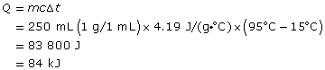
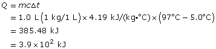
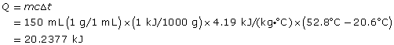
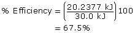
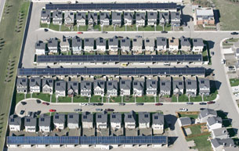

Module 1—Thinking Energy
Going Beyond
Calorimetric data about the energy content in foods is not always reliable. Use the Internet to research other methods used to determine the energy content in foods. Why are other methods used? Do the other methods have limitations or do they provide greater accuracy than calorimetric data?
 Self-Check
Self-Check
SC 1. Complete “Practice” questions 1 to 8 on page 487 in the textbook.
Self-Check Answer
SC 1.
- Energy cannot be created nor destroyed.
- All energy comes from some other form of energy.
Practice 3.
Practice 4.
- If the mass of material undergoing temperature change is doubled
and the other variables remain the same, then the thermal energy is
doubled.
- If the specific heat capacity of material undergoing temperature
change is divided by two (is halved) and the other variables remain the
same, then the thermal energy is halved.
- If the temperature change of the material is tripled and the
other variables remain the same, then the thermal energy is tripled.
- If all three variables (m, c, and Δt)
are doubled, then the thermal energy is increased by a factor of 8 (2
× 2 × 2 = 8).
Practice 6.

The gain in the water’s thermal energy is 84 kJ.
Practice 7.

The gain in the water’s thermal energy is 3.9 x 102 kJ.
Practice 8.


The calorimeter is 67.5% efficient.
Evaluate the Design of a Solar Panel
Watch and Listen

Natural Resources Canada
Drake Landing is an innovative neighborhood located in Okotoks, Alberta. Part of Drake Landing’s innovation involves the way the development uses solar energy to greatly reduce the neighbourhood’s dependence on fossil fuels. As shown in the picture, energy from the sun is used to heat homes. This greatly reduces the need for fossil fuels.
View the video “Drake
Landing Solar Community” for more information on how a community
solar heating system works.
The solar panels found on the roofs of buildings within the Drake Landing Solar Community are part of an active solar heating system. The circulation of antifreeze solution through the system allows for the transfer of energy from the collector to the house or to the borehole energy storage system.
![This graphic shows a diagram titled Active Solar Heating System. An outline of a house is shown with a solar heat collector located on the roof. The solar heat collector consists of a layer of high transmittance glass over an absorber sheet with optical coating and copper tubing. Inside the copper tubing is an antifreeze solution. Cool antifreeze solution is pumped from a solar storage tank located inside the house to the collector. Warm antifreeze is pumped from the collector to the solar storage tank. Inside the solar storage tank is a heat exchanger that is connected to a furnace. In the furnace, warm air is released to heat the house.](../../images/m1/015_solar_heating.jpg)
This is a schematic representation of a solar heating system and its components.
 Module 1: Lesson 2 Assignment
Module 1: Lesson 2 Assignment
Retrieve your copy of the Module 1: Lesson 2 Assignment that you saved to your computer earlier in this lesson. You will use your knowledge of energy transfers and of how an energy-measuring device such as a calorimeter works. Complete Part 2—Evaluate the Design of a Solar Collector, and save your work in your course folder. You will receive information later in the lesson on when to submit your work to your teacher.